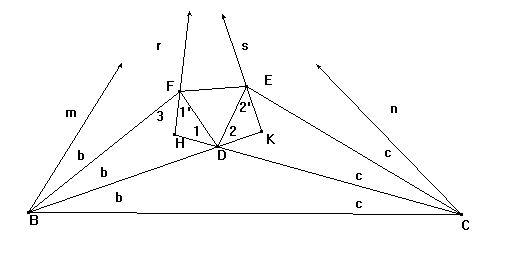

| Si los ángulos de un triángulo son trisectados,las intersecciones de los pares de trisectores adyacentes a cada lado determinan un triángulo equilátero. |
Grossman, H.D. (1943): The Morley triangle: a new geometric proof. American Mathematical Monthly,50,(1943) pag. 552
Demostracion:
Sea el triángulo que tiene de base BC,y de ángulos 3a,3b,3c. Sean BDK,BF,CDH,CE los segmentos que trisecan los ángulos.
E es tal que el ángulo CDE=60º+b,y F es tal que el ángulo BDF=60º+c.
Entonces,ángulo
EDF=360º-(180º-b-c)-(60º+b)-(60º+c)=60º. Además,ángulo
BFD=180º-(60º+b+c)=60º+a=ángulo CED.
 |
Dado que
D equidista de BF y de CE,DF=DE, y el triángulo DEF es equilátero. Ángulo 1=(60º+c)-(b+c)=60º-b. De manera similar,ángulo 2=60º-c. Por F tracemos la recta r de manera que ángulo 1' =ángulo 1. Por E tracemos la recta s de manera que ángulo 2' =ángulo 2. Ángulo 3=(60º+a)-(60º-b)=a+b. Ángulo mr=(a+b)-b=a. De manera similar,ángulo sn=(a+c)-c=a. Y ángulo mn=180º-3b-3c=3a. |
Sólo queda demostrar que las rectas m,n,r y s convergen en un punto. La recta KF une los vértices de dos triángulos isóceles y por ello biseca el ángulo K.
Entonces en el triángulo mBKs,la bisectriz del ángulo ms,pasa por F y al ser paralela a r,coincide con r.
De manera similar
en el triángulo rHCn,la bisectriz del ángulo rn pasa por
E,y al ser paralela a s,coincide con s.CQD.
Algunas páginas con el teorema de Morley
| Enlaces con permiso de sus autores |
| Miguel Castillo (Gacetilla Matemática) |
| Javier García |
| Carlos Fleitas (Profesor del I.E.S. "Marqués de Santillana") Colmenar Viejo, Madrid |
| Lorenzo Roi
(Approfondimenti di geometria) (Insegnante di liceo scientifico di Matematica e Fisica in Vicenza (Veneto-Italy)) |
| Rudy (Ye Boss) d'Alembert Alice (Fraülein) Riddle Piotr R. (Doc) Silverbrahms (Rudi mathematici, Politecnico di Torino) |
| Antonio Gutiérrez |
| Alexander Bogomolny |
Artículo de Jean Marie Laborde sobre la trisección enCabri
Artículo del American Mathematical Monthly, Cletus O. Oakley, Justine C. Baker, The Morley Trisector Theorem, Vol. 85, No. 9. (Nov., 1978), pp. 737-745. (Contiene una magnífica biliografía sobre el teorema)